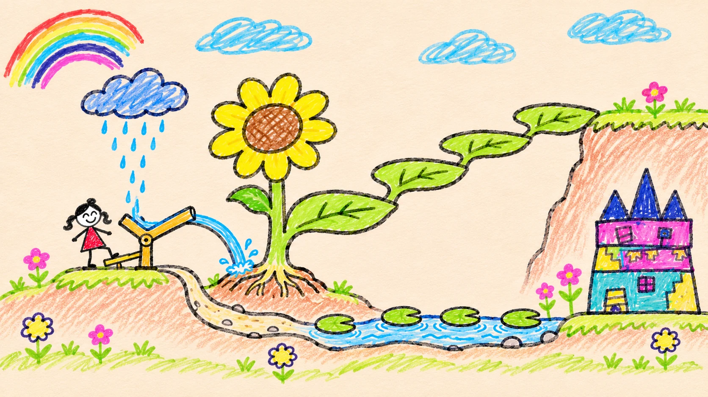
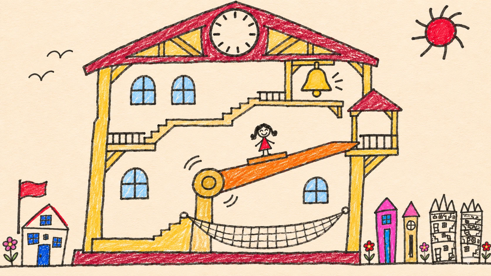
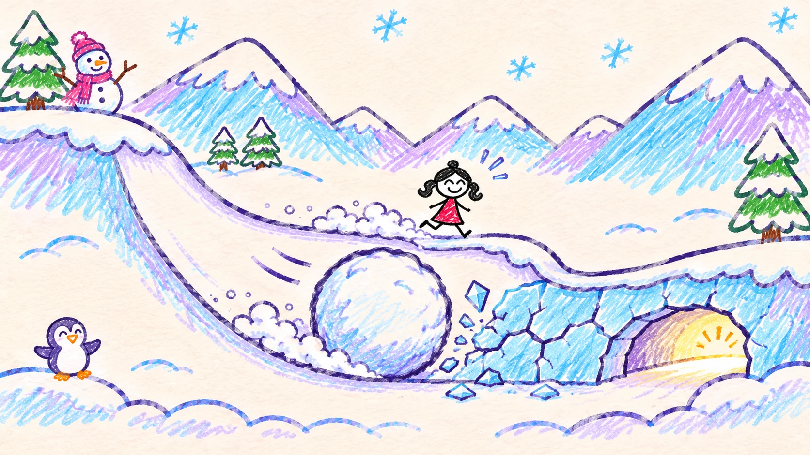

花开成路
城堡就在河对岸。踩动分水槽，灌溉向日葵，叶子依次展开，孩子可以沿花茎跳上山脊。把水引进池塘，荷叶浮起，便能走水边穿过桥洞。
高路能提前看清下一处分水口，低路落脚宽、可以慢慢观察。两路都能到城堡。轻松档第一次试水时，水槽、花根和第一片新叶都在同一屏。
踩水槽让叶子长成桥，搭上钟楼的橙色指针，或从雪脊赶在雪球前面切换岔轨。三个世界各有八个可玩的区段。
改版前，给工作区的九个可选世界各生成了 12 张地图。除新版蘑菇森林外，另外八个世界的 96 张图都是同一个连接方式：进第一间房，在接下来的三层各选一间，最后进入首领房。两扇门后确实会出现不同的怪、宝箱和小店，但无论选哪扇，下一次仍在同一层选门。
这 96 张图连开场中段都是上下双层地形。通用战斗房又按三个战区、每区两波推进。沙漠已有攀岩和独立洞窟；新版森林更进一步，孩子能决定先上树还是先钻树根，救到幼鸟后会想找一条回巢的近路。
抽样来自本地地图生成器，种子 1～12。观察的是地图连接和段落顺序；儿童游玩感受留给试玩验证。
三幅图都取材于现有世界和彩笔人物。它们表示玩家做决定的那一刻，点击可看大图。

城堡就在河对岸。踩动分水槽，灌溉向日葵，叶子依次展开，孩子可以沿花茎跳上山脊。把水引进池塘，荷叶浮起，便能走水边穿过桥洞。
高路能提前看清下一处分水口，低路落脚宽、可以慢慢观察。两路都能到城堡。轻松档第一次试水时，水槽、花根和第一片新叶都在同一屏。

从街上就能看见塔顶的钟。跳上慢慢摆动的大指针，经过低阳台时可以先下去，穿过屋顶绕上楼；也可以留在指针上，到高窗再跳走。登顶敲钟后，街上的吊桥放下，接通镇广场。
塔心和窗台是固定地标。指针每次靠站会短暂停住，跳早了会落进下方软网。适合喜欢等一个好时机、一下跳准的孩子。

从山顶推下大雪球，跟着它走谷底，能看它撞开薄冰，露出山洞。熟悉地形后，可以沿上坡抄近路，抢在球前踩下岔轨板，把球送往另一面冰墙，打开通往山口的第二条路。
没赶上也能走刚撞开的洞，雪球停在雪窝。下一段由孩子自己放球，镜头跟着人物。三种方案里，这一关的动作最快，最需要试玩校准坡长和球速。
新冒险可以直接选第 1、2、6 世界。三个新世界各用独立的关卡标识，旧冒险继续原来的地图。开过的水渠、敲过的钟、雪球的位置和已发现的洞会随当前冒险保存。